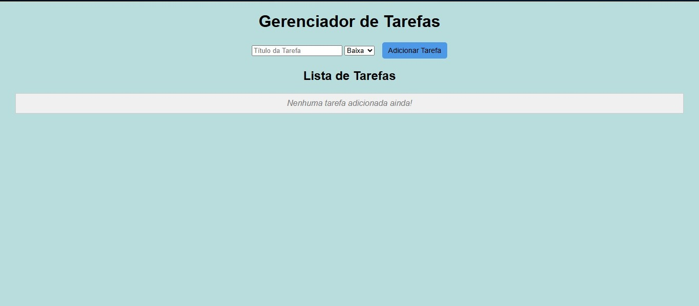
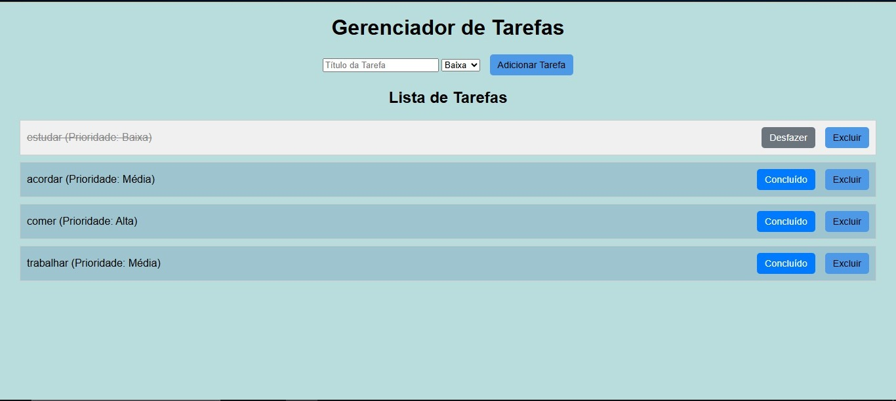

To do List
O projeto To-Do List é um Gerenciador de Tarefas web, criado utilizando HTML5, CSS3 E JavaScript. Ainda utiliza o IndexedDB do navegador para armazenar as tarefas no dispositivo.


Funcionalidades Principais
- **Adicionar Tarefas:** Permite criar novas tarefas, definindo um título e uma prioridade (Baixa, Média, Alta). A entrada é validada para garantir que o título não esteja vazio, e os campos são automaticamente limpos após a adição.
- **Listar Tarefas:** Exibe todas as tarefas salvas, organizando-as em uma lista. Se não houver tarefas, uma mensagem amigável é mostrada. As tarefas ativas possuem um fundo distinto, enquanto as concluídas são visualmente diferenciadas (riscadas e com outra cor de fundo).
- **Marcar como Concluida/Desfazer:** Cada tarefa possui um botão dinâmico ("Concluído" ou "Desfazer") que permite alternar o status da tarefa. Ao marcar como concluída, a tarefa recebe um estilo de "riscado" e uma cor de fundo específica. Clicar novamente no botão reverte o status e o estilo.
- **Excluir Tarefas:** Permite remover tarefas indesejadas da lista, com uma confirmação para evitar exclusões acidentais.
- **Persistencia de Dados:** Todas as tarefas e seus status (concluída ou não) são armazenados localmente no navegador usando IndexedDB. Isso garante que as tarefas não sejam perdidas mesmo que a página seja fechada ou o navegador reiniciado.
- **Organização e Desing:** O projeto é estruturado com separação de HTML, CSS e JavaScript em arquivos dedicados, e o CSS aplica um design limpo e funcional com cores de fundo que diferenciam o corpo da página, tarefas ativas e tarefas concluídas, além de estilos para botões e campos de formulário.
Objetivo do Projeto
O objetivo deste projeto é oferecer uma ferramenta web simples e eficaz para o gerenciamento pessoal de tarefas. Ele permite que usuários adicionem, visualizem e excluam suas tarefas, com todas as informações sendo salvas no navegador. O projeto visa proporcionar uma solução prática e acessível para organizar o dia a dia.
Tecnologias Utilizadas
- **HTML5:** Para a estruturação semântica do conteúdo.
- **CSS3:** Para toda a estilização e design, com ênfase em Flexbox para layouts responsivos.
- **JavaScript:** Responsável por toda a lógica interativa, manipulação do DOM e a comunicação com o banco de dados.
- **IndexedDB** Utilizada para armazenar e gerenciar as tarefas de forma persistente diretamente no dispositivo do usuário.
- **Controle de Versão:** Git e GitHub.